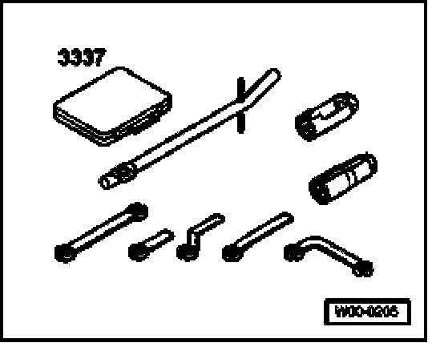
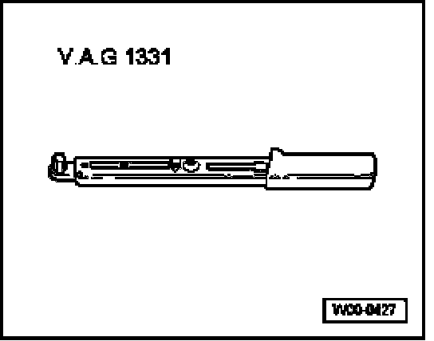
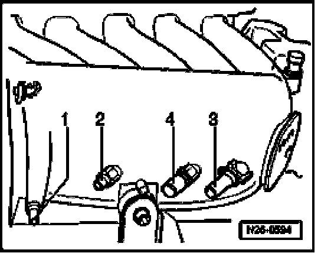
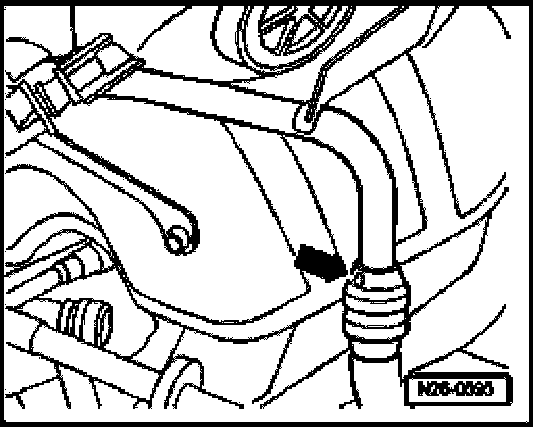
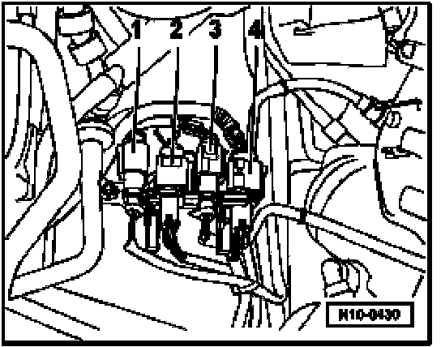

Exhaust Manifold and Primary Catalytic Converters, Removing and Installing
Exhaust Manifold And Primary Catalytic Converters, Removing And Installing
Recommended special tools and equipment

- 3337 Ring spanner 7-piece set

- VAG1331 Torque wrench (5 to 50 Nm)
Not illustrated:
- VAG1332 torque wrench (40 to 200 Nm)
Disconnect battery
- Switch off ignition and all electrical consumers.
- Disconnect batteries.
Removing

- Disconnect vacuum hoses -1- through -4- from intake manifold change-over.

- Disconnect pressure hose (arrow) from Secondary Air Injection (AIR) Pump Motor -V101- at pressure line.
- Remove complete air filter housing.
- Remove intake manifold change-over.
- Remove shielding plate with intake manifold support from cylinder head.

- Disconnect harness connectors -1- through -4- to oxygen sensors and unclip wires from wire routing.
- Screw oxygen sensors out of primary catalytic converters using ring spanner set 3337.
- Raise vehicle.
- Unscrew mounting nuts on flange to catalytic converter.
- Unscrew support to transmission.
- Unscrew flange to exhaust manifold.
- Remove exhaust manifold.
- Carefully remove exhaust pipes with primary catalytic converters.
Installing
NOTE:
- When installing exhaust pipes, make sure flange connection behind catalytic converter has a proper seal. Leaks in this area lead to a pulsing of the exhaust gases. This permits outside area to reach the oxygen sensor behind catalytic converter and oxygen sensor control is disrupted.
- Align exhaust system so that there is sufficient clearance between transmission and subframe.
The rest of the installation follows the reverse of the removal procedures.